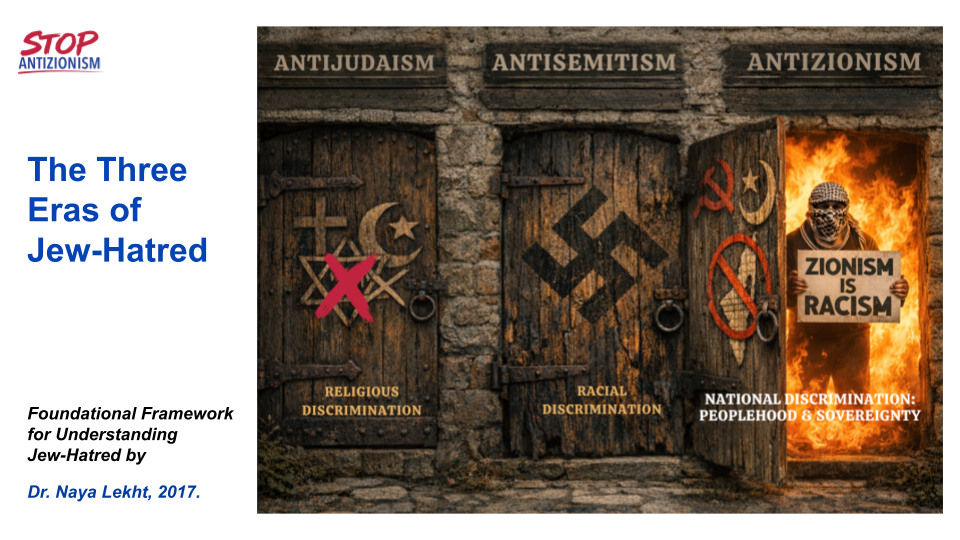

LEARN
WHAT IS ANTIZIONISM?
Antizionism demonizes Israel and the Jewish people by portraying the Jewish state as uniquely illegitimate and malevolent. It does so through three core libels: that Israel is a colonialist state, an apartheid state, and a genocidal state.
ANTIZIONISM LIBELS
Antizionism demonizes the Jew through the Jewish nation-state. Like anti-Judaism and antisemitism before it, antizionism portrays its Jewish target—Israel—as the embodiment of evil. In the contemporary era, that evil is expressed through the moral language of human rights. Israel is therefore accused of the age’s most heinous crimes: racism, colonialism, apartheid, genocide, and even Nazism. These accusations did not emerge in a historical vacuum. Their ideological foundations can be traced principally to two sources: the Arab-Nazi convergence of the 1930s and 1940s, and the Soviet antizionist campaigns that intensified after 1967. Together, these traditions supplied many of the accusations and rhetorical frameworks through which Israel would later be cast as a uniquely criminal state.
WHAT ARE THE 3 ERAS OF JEW HATRED?
For two thousand years, hatred of Jews has changed its language, its accusations, and its justifications, but not its target. How does this ancient hatred persist while continually taking new forms?
In the first era, antijudaism, the Jew was condemned as the enemy of God. In the second, antisemitism, the Jew was cast as the enemy of race. And today, in the era of antizionism, Jews, through the Jewish state, are cast as violators of human rights—and therefore as enemies of humanity.
Central to understanding this continuity is a recurring pattern: before society can vilify the Jew, it must first establish what it considers virtuous. The Jew is then accused of violating that virtue. When faith represented the highest moral good, the Jew was portrayed as the enemy of God. When race and nation became organizing ideals, the Jew was portrayed as their corrupting enemy. Today, as human rights have become a dominant moral ideal, the Jewish state is accused of committing humanity’s gravest crimes.This is what makes Jew-hatred so enduring and so difficult to recognize: it presents itself as a virtuous hatred. The Jew is not merely disliked but cast as a cosmic villain whose extermination becomes a moral act.
This is what makes Jew-hatred so enduring and so difficult to recognize: it presents itself as a virtuous hatred. The Jew is not merely disliked but cast as a cosmic villain whose extermination becomes a moral act.

AZ TOOLKIT
RESEARCH & RESOURCES
articles by naya, natasha, kile, anyone else writing about antizionism